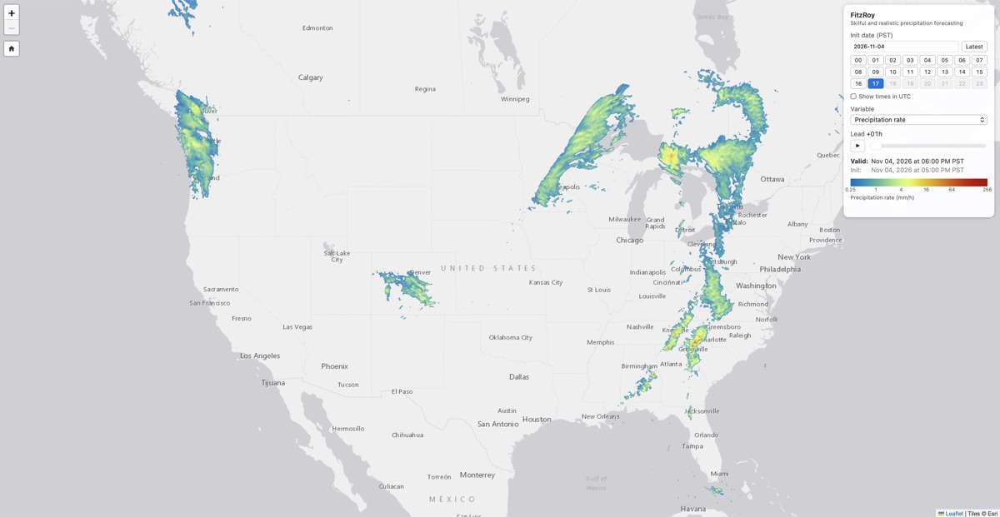
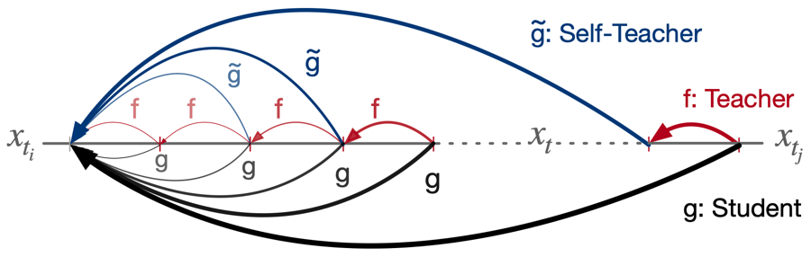
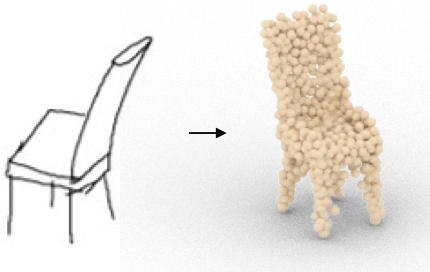
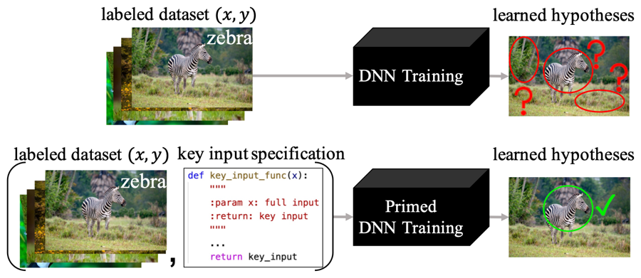
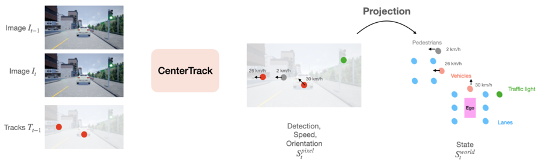
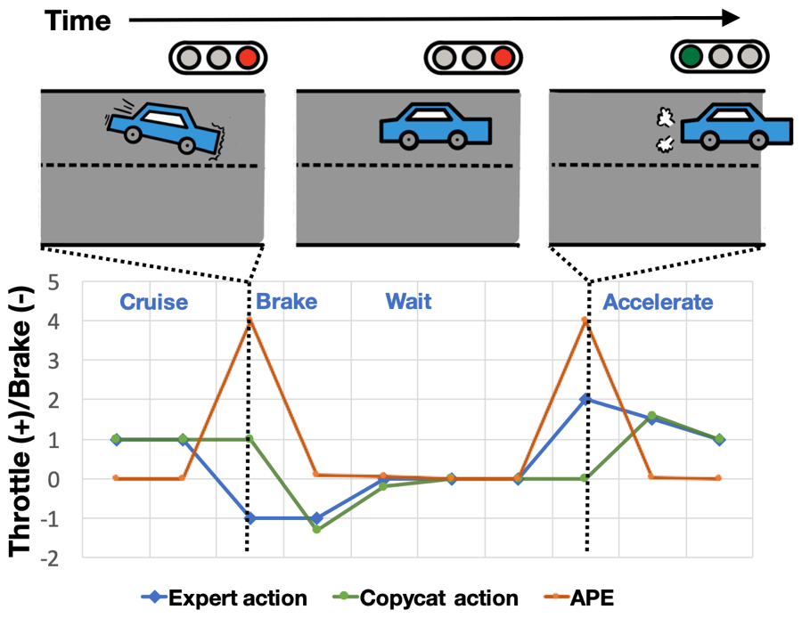
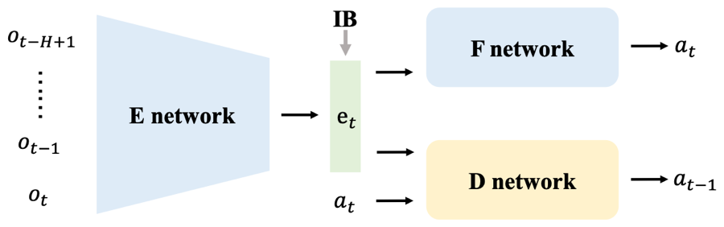

Senior ML Researcher · Apple
Jierui Lin
Working on Machine Learning
I am a senior machine learning researcher in Physical Intelligence (PHI) led by Vladlen Koltun at Apple, where I work on Machine Learning, LLM, and AI for Science.
I obtained my Master's degree in Computer Science from UT Austin, advised by Prof. Philipp Krähenbühl and Prof. Yuke Zhu. Prior to that, I obtained my Bachelor's degree in Computer Science and Applied Mathematics from UC Berkeley, where I'm fortunate to work with Prof. Trevor Darrell and Prof. Jitendra Malik.
Research
-

Skillful and Realistic Precipitation Forecasting with Reinforced Diffusion
Physics-based weather models struggle to resolve small-scale convection, while machine-learning forecasters tend to produce blurry, physically inconsistent fields that underestimate extreme rainfall. FitzRoy resolves this trade-off with a reinforced diffusion framework, in which a conditional discrete diffusion model is refined with reinforcement learning. Over the continental United States, it matches or exceeds state-of-the-art skill at lead times up to 24 hours while keeping forecasts structurally realistic.
Key contributions
- First system to achieve both state-of-the-art predictive skill and physical realism for precipitation over the continental US.
- A reinforced diffusion framework (discrete diffusion + RL refinement) that resolves the trade-off between pointwise accuracy and structural fidelity.
- Captures extreme events, signaling record-breaking accumulations in the 2025 Texas Hill Country and 2026 Missouri floods that existing models largely missed.
- Low-latency inference suitable for real-time operational deployment.
-

TRACT: Denoising Diffusion Models with Transitive Closure Time-Distillation
Denoising diffusion models generate high-quality samples but typically require many network evaluations. TRACT (TRAnsitive Closure Time-distillation) extends binary time-distillation to reduce the number of sampling steps for a fixed architecture, substantially improving sample quality in the single-step regime.
Key contributions
- TRACT, a new time-distillation method that generalizes binary time-distillation (BTD).
- Up to 2.4× better single-step FID than BTD on the same architecture.
- New single-step DDIM state of the art: FID 7.4 on ImageNet64 and 3.8 on CIFAR-10.
- Extensive ablations isolating the contribution of each component.
-

3D Shape Reconstruction from Free-Hand Sketches
Prior work on sketch-based 3D reconstruction assumes clean, distortion-free line drawings such as CAD renderings or edge maps. This paper tackles real free-hand sketches, motivated by interactive design and VR/AR applications. To overcome limited training data and highly varied drawing styles, it trains on synthesized sketches and introduces a module that standardizes sketch distortions and styles.
Key contributions
- Studies 3D shape reconstruction from free-hand sketches rather than distortion-free line drawings.
- A data generation pipeline that synthesizes training sketches to address data scarcity.
- A sketch standardization module that handles diverse distortions and individual drawing styles.
- Strong generalization across varied free-hand sketches, with publicly released code.
-

Fighting Fire with Fire: Avoiding DNN Shortcuts through Priming
Deep networks often latch onto “shortcut” solutions that fail under small distribution shifts. This paper shows that supplying an additional priming feature — typically a coarse output estimate computed from key input features — steers networks away from poor shortcuts. Priming requires only approximate domain knowledge, such as prioritizing recent video frames or salient foreground pixels.
Key contributions
- Priming: a simple, domain-informed input feature that helps DNNs avoid harmful shortcuts.
- Effective across classification and control: NICO image classification, MuJoCo continuous control, and CARLA autonomous driving.
- Outperforms popular state-of-the-art feature-selection and data-augmentation methods.
- A theoretical account: priming distracts the optimizer from poor shortcuts by offering better, simpler ones.
-

-

Keyframe-Focused Visual Imitation Learning
In partially observed settings, imitation policies that use observation histories paradoxically often underperform policies that see only the latest frame, and prior fixes did not scale to visual imitation. This paper proposes upweighting demonstration keyframes — the points where the expert’s action changes — a simple approach that scales to complex visual tasks.
Key contributions
- A keyframe-upweighting scheme based on expert action changepoints that scales to visual imitation.
- Consistent improvements over all baselines on image-based MuJoCo continuous-control tasks.
- Effective imitation from observation histories in the CARLA driving simulator, resolving a long-standing issue in behavioral cloning for driving.
-

Fighting Copycat Agents in Behavioral Cloning from Observation Histories
When expert actions are strongly correlated over time, an imitation agent with access to observation histories can “cheat” by predicting the expert’s previous action rather than the next one. This paper identifies this copycat problem as a common form of causal confusion and proposes an adversarial method to learn representations that discard excess information about the previous action while retaining what is needed to predict the next.
Key contributions
- Identifies and characterizes the copycat problem in behavioral cloning from observation histories.
- An adversarial representation-learning approach that removes the previous-action nuisance correlate.
- Significant performance gains across a variety of partially observed imitation learning tasks.
* denotes equal contribution
Honors & Awards
-
Highest Honor in Applied MathematicsUC Berkeley
-
Honor in Computer ScienceUC Berkeley
Service
-
Reviewer
-
Teaching Assistant UC Berkeley — CS 170 (Algorithms), CS 188 (AI) UT Austin — CS 342 (Neural Networks), CS 343 (AI)